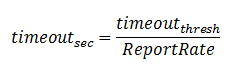

The sensor time-out threshold specifies a maximum amount of time a sensor may be in a touch or proximity state before it is reset. The threshold is set in units of samples. The threshold can be related to a time-out period in seconds by using the formula below, where Report Rate represents the measurement frequency of the sensor (in Hz).

The sensor time-out feature is useful for restoring the system in the event that a sensor gets stuck in proximity or touch detect. This may happen for a variety of reasons.
Here are a few examples:
1. A proximity sensor is included in a wall-mounted thermostat to detect when someone is approaching the thermostat touch panel. Someone decides to hang a picture above the thermostat on the wall, increasing the capacitance and causing the proximity sensor to get stuck in detect. If the sensor time-out feature was applied, after a period of time the proximity sensor would reset, clearing the proximity state and resetting the long-term-average to the new environment with the picture on the wall.
2. A phone keypad utilized capacitive touch buttons. A user sets a stack of paper on top of all the buttons, causing them to go into a touch state. After the time-out period expires, the touch state is cleared. When the papers are removed, the long-term-average quickly adjusts to the new value, since it appears as a change against the direction of interest (a negative touch).
Implementation Notes
The best time-out threshold depends on the application.
Buttons typically are not pressed for large lengths of time,
and the time-out periods can be shorter.
Slider and wheel controls may be in a touch or proximity state for an extended
period of time by design, and as such they may require longer time-out periods.
If you are designing a system and the counts being read back are jumping unexpectedly when they are touched for a long period of time, be sure to check the sensor time-out value to ensure it is not too short. Note that the system report rate effects the actual length of time in seconds necessary for a time-out to be issued.
Range of Valid Values for the Sensor Timeout Threshold Parameter
The sensor timeout threshold may be set from 0 to 65534 samples. Note that
specifying a value of zero would result in a sensor that times out every sample,
which is not a useful configuration.
Setting a value of 65535 disables the timeout feature altogether.
Affected Software Parameters
The Sensor_Timeout_Threshold parameter corresponds to the
ui16TimeoutThreshold
member of the
tSensor
type in the CapTIvate Touch Library.